时间序列可视化¶
1.时间序列可视化¶
图形：
时间序列的时间结构：
Line Plots
Lag Plots or Scatter Plots
Autocorrelation Plots
时间序列的分布
Histograms and Density Plots
时间序列间隔上分布
Box and Whisker Plots
Heat Maps
数据：
澳大利亚墨尔本市10年（1981-1990年）内的最低每日温度
import pandas as pd
from pandas import Grouper
import matplotlib.pyplot as plt
series = pd.read_csv("https://raw.githubusercontent.com/jbrownlee/Datasets/master/daily-min-temperatures.csv",
header = 0,
index_col = 0,
parse_dates = True,
squeeze = True)
print(series.head())
Date,Temp
1981-01-01,20.7
1981-01-02,17.9
1981-01-03,18.8
1981-01-04,14.6
1981-01-05,15.8
1981-01-06,15.8
1.1 时间序列折线图(line plot)¶
\(x\) 轴：timestamp
\(y\) 轴：timeseries
series.plot()
plt.show()
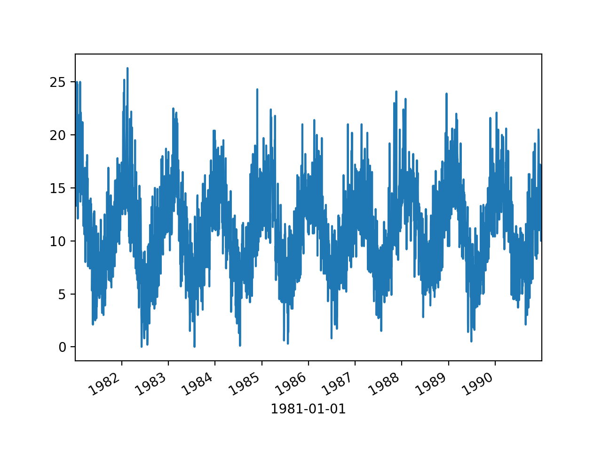
series.plot(style = "k-")
plt.show()
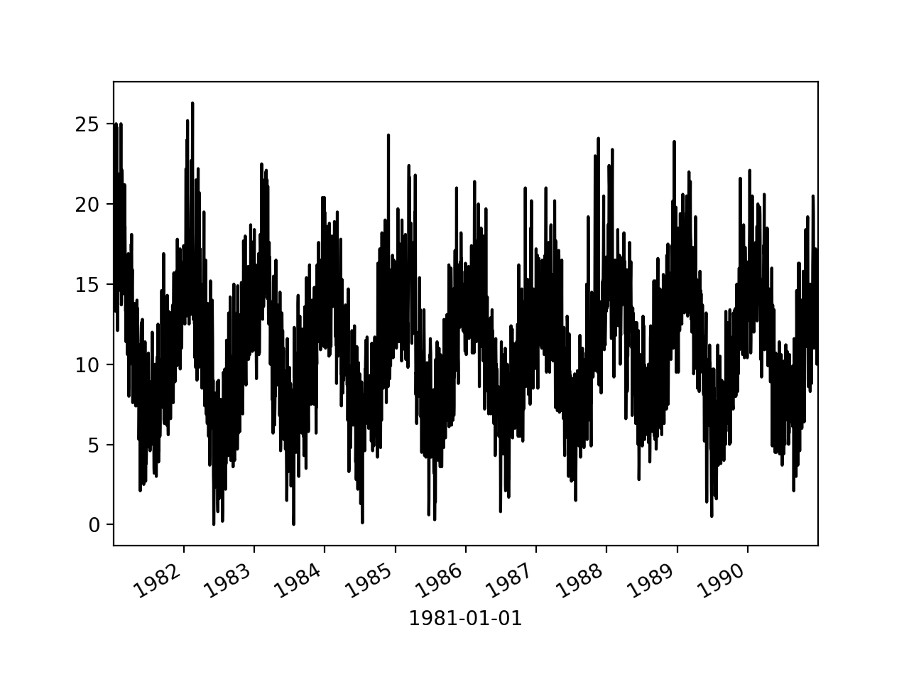
series.plot(style = "k.")
plt.show()
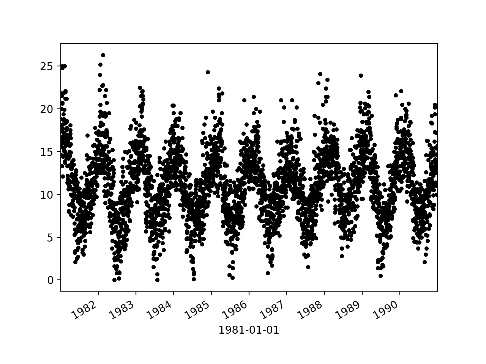
groups = series.groupby(pd.Grouper(freq = "A"))
years = pd.DataFrame()
for name, group in groups:
years[name.year] = group.values
years.plot(subplots = True, legend = False)
plt.show()
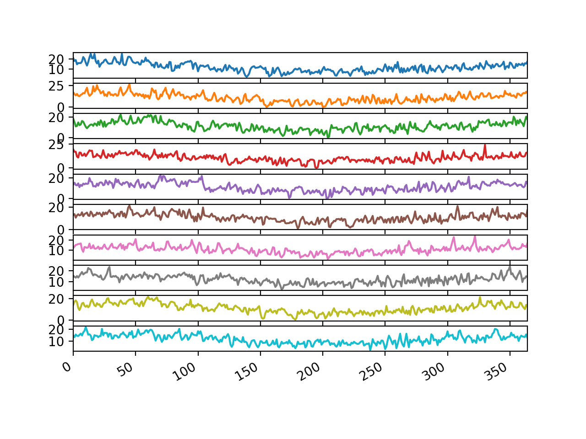
1.2 时间序列直方图和密度图(line plot)¶
时间序列值本身的分布，没有时间顺序的值的图形
series.hist()
plt.show()
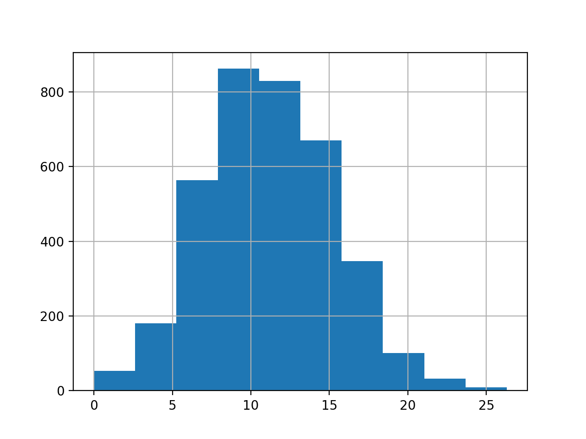
series.plot(kind = "kde")
plt.show()
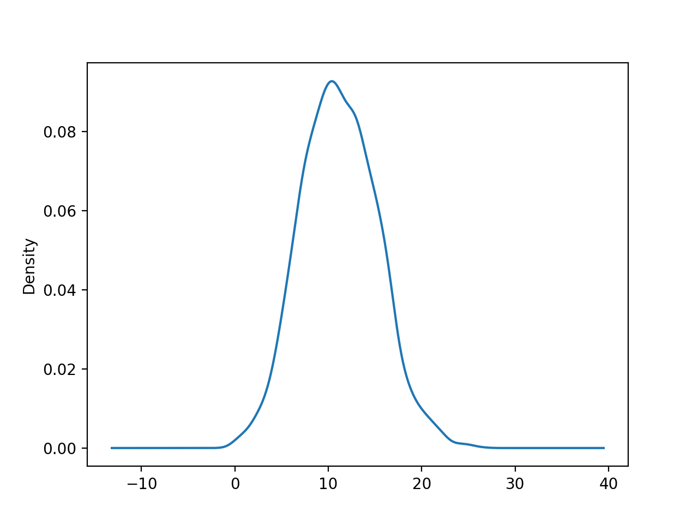
1.3 时间序列箱型图和晶须图¶
在每个时间序列(例如年、月、天等)中对每个间隔进行比较
groups = series.groupby(Grouper(freq = "A"))
years = pd.DataFrame()
for name, group in groups:
years[name.year] = group.values
years.boxplot()
plt.plot()
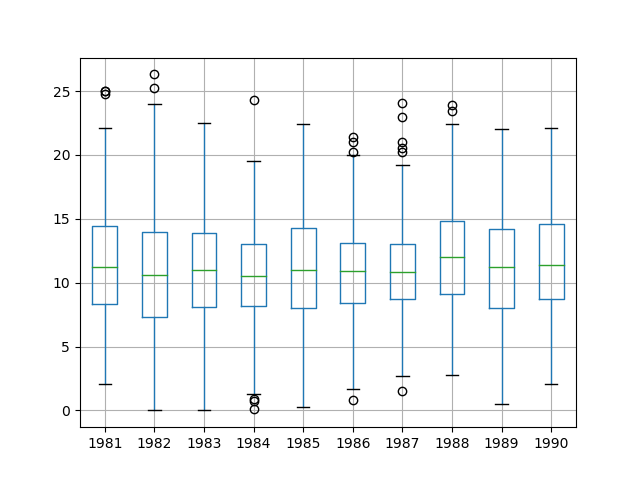
one_year = series["1990"]
groups = one_year.groupby(Grouper(freq = "M"))
months = pd.concat([pd.DataFrame(x[1].values) for x in groups], axis = 1)
months = pd.DataFrame(months)
months.columns = range(1, 13)
months.boxplot()
plt.show()
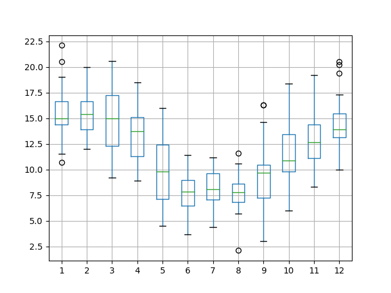
1.4 时间序列热图¶
用较暖的颜色(黄色和红色)表示较大的值，用较冷的颜色(蓝色和绿色)表示较小的值
groups = series.groupby(Grouper(freq = "A"))
years = pd.DataFrame()
for name, group in groups:
years[name.year] = group.values
years = years.T
plt.matshow(years, interpolation = None, aspect = "auto")
plt.show()
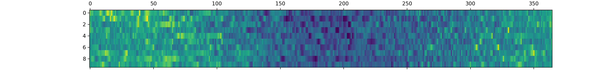
one_year = series["1990"]
groups = one_year.groupby(Grouper(freq = "M"))
months = pd.concat([pd.DataFrame(x[1].values) for x in groups], axis = 1)
months = pd.DataFrame(months)
months.columns = range(1, 13)
plt.matshow(months, interpolation = None, aspect = "auto")
plt.show()
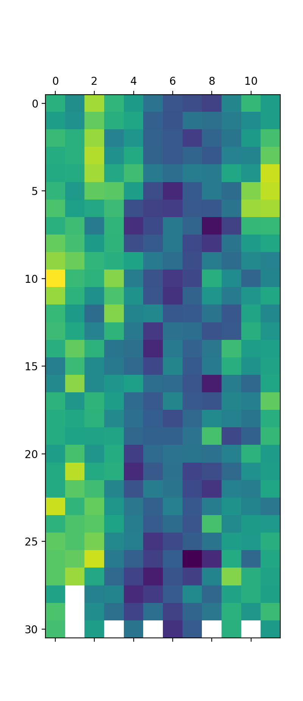
1.5 时间序列滞后散点图¶
时间序列中的先前观测值称为滞后，先前时间步长的观测值称为lag1，两个时间步长之前的观测值称为lag2，依此类推.
Pandas具有内置散点图功能，称为延迟图。它在x轴上绘制在时间t处的观测值，在y轴上绘制lag1观测值(t-1).
如果这些点沿从图的左下角到右上角的对角线聚集，则表明存在正相关关系。如果这些点沿从左上角到右下角的对角线聚集，则表明呈负相关关系。由于可以对它们进行建模，因此任何一种关系都很好。越靠近对角线的点越多，则表示关系越牢固，而从对角线扩展的越多，则关系越弱.中间的球比较分散表明关系很弱或没有关系.
from pandas.plotting import lag_plot
lag_plot(series)
plt.show()
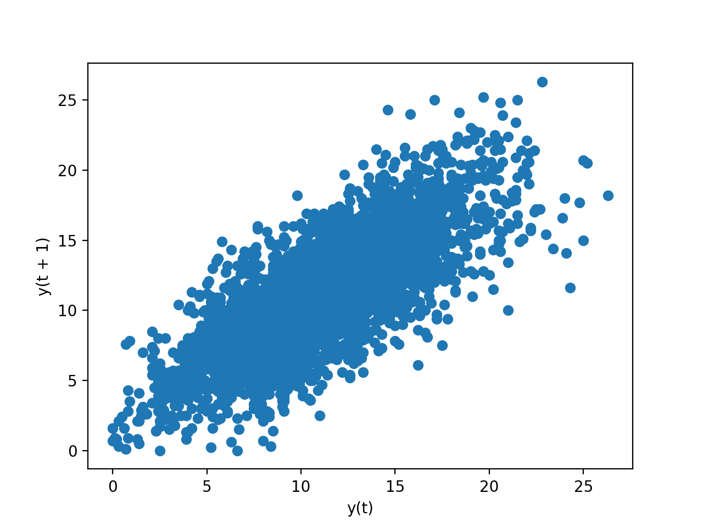
values = pd.DataFrame(series.values)
lags = 7
columns = [values]
for i in range(1, (lags + 1)):
columns.append(values.shift(i))
dataframe = pd.concat(columns, axis = 1)
columns = ["t+1"]
for i in range(1, (lags + 1)):
columns.append("t-" + str(i))
dataframe.columns = columns
plt.figure(1)
for i in range(1, (lags + 1)):
ax = plt.subplot(240 + i)
ax.set_title("t+1 vs t-" + str(i))
plt.scatter(x = dataframe["t+1"].values, y = dataframe["t-" + str(i)].values)
plt.show()
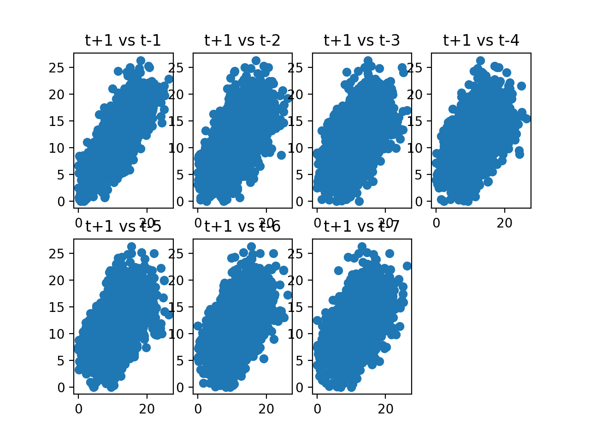
1.5 时间序列自相关图¶
量化观察值与滞后之间关系的强度和类型。在统计中，这称为相关，并且根据时间序列中的滞后值进行计算时，称为自相关（自相关）.
from pandas.plotting import autocorrelation_plot
autocorrelation_plot(series)
plt.show()
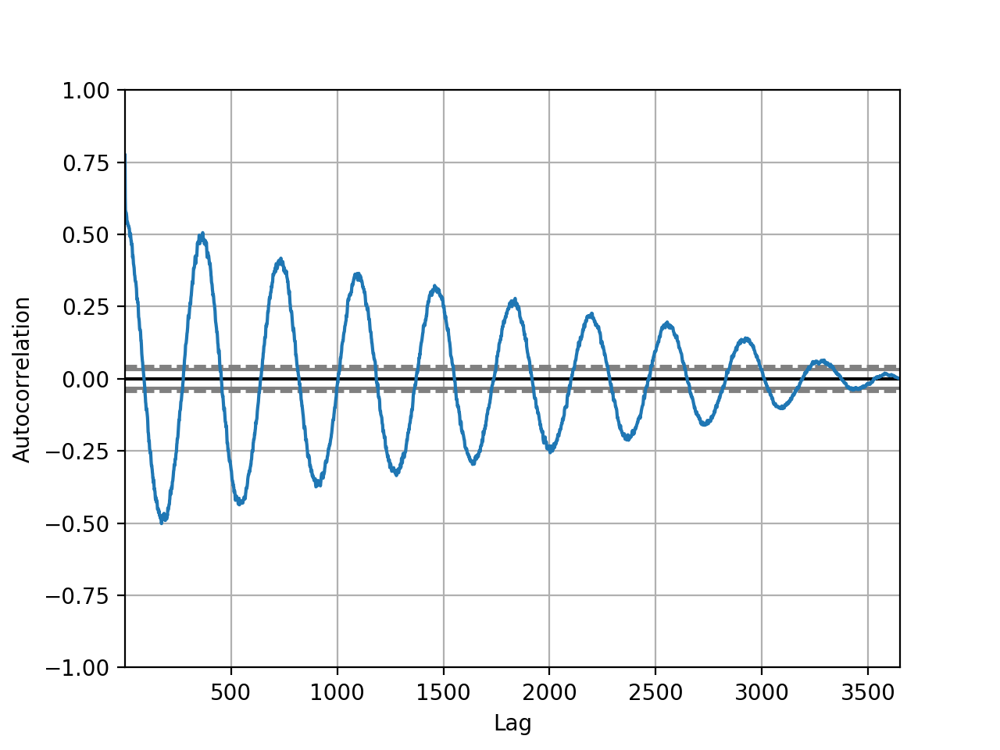